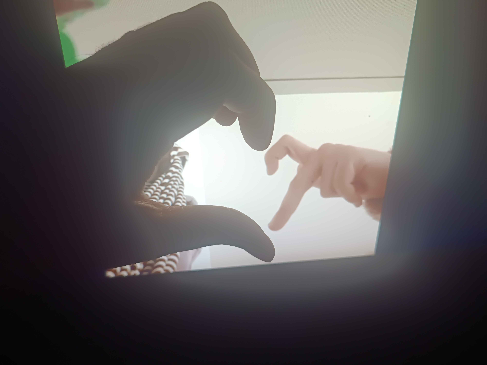

Happy Valentine's Day
My sweetest, my most precious David,
You are the love that fills my heart, the air that gives me life, and the dream I never want to wake up from.
Every moment with you is a gift, every second I hold a treasure like you so close.
I will love you fiercely, endlessly, and with every part of my soul, heart and lungs.
No matter what tomorrow brings, I will always stand by your side, to cherish you, to adore you,
and to make your heart blossom with my love every single day.
You are my forever, my home, my greatest lucky charm. ❤️
~
